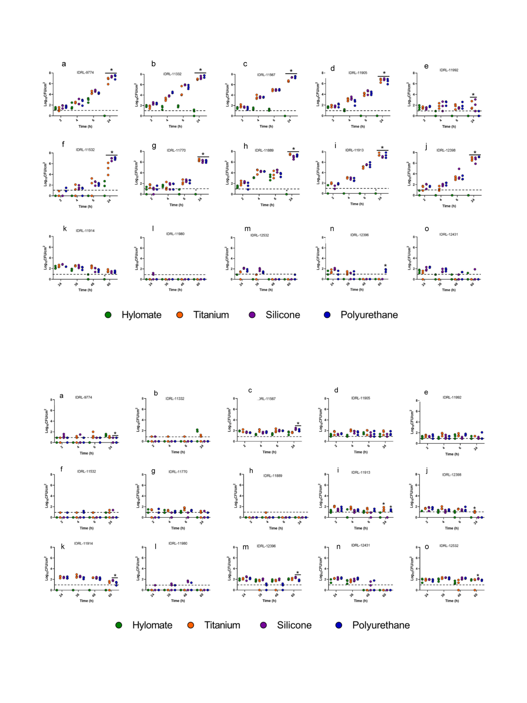

M. Albano, K.E. Greenwood-Quaintance, M.J. Karau et al.
IJC Heart & Vasculature 34 (2021) 100801
Fig. 3. Quantitative culture of Staphylococcus aureus (a, b, c, d, e), Staphylococcus epidermidis (f, g, h, i, j) and Cutibacterium acnes (k, l, m, n, o) on HylomateÒ, titanium, silicone
and polyurethane pre-treated with bacitracin (1000 U/ml). *Represents significant difference (p < 0.5) between Hylomate and other materials 24 h incubation.
Fig. 4. Results of quantitative culture of Staphylococcus aureus (a, b, c, d, e), Staphylococcus epidermidis (f, g, h, i, j) and Cutibacterium acnes (k, l, m, n, o) on HylomateÒ, titanium,
silicone and polyurethane coupons pre-treated with rifampin (80 mg/ml) plus minocycline (50 mg/ml). *Represents significant difference (p < 0.05) between Hylomate and
other materials after 24 h or 60 h incubation for staphylococci and C. acnes, respectively.
4